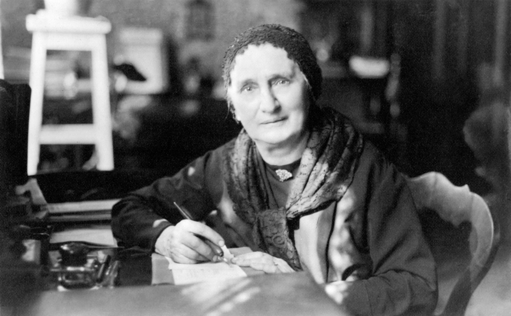

Terézia Vansová
Keď žiadna Slovenka ešte nenapsala román, sadla a napísala ho. Keď žiadny slovenský časopis pre ženy neexistoval, zakladala ho sama. Terézia Vansová, rodená Medvecká, nečakala, kým jej niekto dá povolenie. Vyrástla v dome luteránskeho farára ako siedme z deviatich detí a niesla so sebou presvedčenie, že vzdelané ženy menia aj krajiny, v ktorých žijú.
„Žena, ktorá číta, myslí. Žena, ktorá myslí, koná. A žena, ktorá koná, mení svet okolo seba."
Terézia Vansová
Prečo bola rebelka
Prvá v každom, čo robila.
Čo robila
Budovala zo základov
- Prvý román napísaný slovenskou ženou (1889)
- Zakladateľka a redaktorka Dennice (1898), prvého ženského časopisu v slovenčine
- Podpredsedníčka Živeny, redaktorka živenských almanachy
- Štátna cena za román Kliatba (1927)
- Literárna tvorba rozprestretá na šesť desaťročí
Prečo to vtedy šokovalo
Robila, čo ženy nerobia
- Ženy nevydávali noviny ani časopisy
- Román bol mužský žáner, nie ženský
- Redaktorka bez formálneho novinárskeho vzdelania
- Verejná intelektuálka v čase, keď žena patrila domov
Dnes
Jej odkaz pre nás
- Zakladaj, ak nič neexistuje
- Píš, čítaj, vzdelávaj sa bez čakania na povolenie
- Médiá, platformy a komunity stavajú ženy samy
- Múdrosť je stratégia, nielen vlastnosť
Jej rebelský moment
Žartovnická, Neznáma veličina, Rokytovský — a predsa len Vansová
Na stránkach Literárneho informačného centra figuruje Terézia Vansová pod celým radom pseudonymov: Johanka Georgiadesová, Milka Žartovnická, Neznáma veličina, P. Kronikár, P. Rokytovský, Reseda a ďalšie. Každé z týchto mien hovorí niečo o tom, akou ženou bola — raz žartovná a ľahká, raz zámerne schovaná za anonymitu, raz ukrytá za mužské iniciály preto, lebo pod ženským menom by jej text nikto nebral rovnako vážne. Vedela to a podľa toho konala, bez toho aby sa nad tým verejne sťažovala.
Keď v roku 1889 dokončila Sirotu Podhradských, pred ňou neexistoval žiadny vzor — žiadna slovenská žena román pred ňou nenapsala a nikto jej nemohol povedať, či to robí správne. Rukopis odoslala a čakala. Vydal sa a stal sa prvým románom, ktorý v dejinách slovenskej literatúry napísala žena, pričom Vansová ho nepísala preto, aby sa zapísala do histórie, ale preto, lebo mala čo povedať. O deväť rokov neskôr, keď zistila, že slovenský časopis pre ženy jednoducho neexistuje, v roku 1898 ho začala sama vydávať pod názvom Dennica a viedla ho pätnásť rokov, celý čas pod vlastným menom aj pod tými ostatnými — podľa toho, čo situácia vyžadovala.
Pre našu generáciu je len Terézia Vansová. Ona sama vedela, že niekedy musela byť aj niekto iný, aby mohla robiť to, čo robila.
Aj ty môžeš byť prvá — a nemusíš pritom vždy vystupovať pod rovnakým menom, v rovnakej úlohe, s rovnakým tónom. Flexibilita nie je slabosť. Niekedy je to presne to, čo ti umožní dotiahnuť veci do konca.
Čo nás učí dnes
Vtedy aj dnes. Tá istá bitka.
Vzor a región
Zvolenská Slatina a slovenské žurnalistické prvá
Zvolenská Slatina · Lomnička · Banská Bystrica
Z farárskej dediny do dejín literatúry
Terézia Vansová vyrastala vo farárskom dome v malej zvolenskej dedine, kde sa slovenčina a luteránska viera prelínali so slovenským kultúrnym životom 19. storočia. Práve toto prostredie formovalo jej presvedčenie, že vzdelanie a slovo sú tie najdôležitejšie nástroje, aké žena môže mať.
Banská Bystrica, kde strávila posledné desaťročia a kde aj zomrela, bola svedkom jej neskorej tvorby, ktorá priniesla štátnu cenu a literárne uznanie zaslúžené celým životom písania. Jej odkaz nesie každá slovenská novinárka a každá spisovateľka, ktorá prišla po nej.
Zbierka Vansová
Nos jej odkaz.
Múdrosť nie je dar. Je to rozhodnutie čítať, myslieť a stavať niečo trvalé.
Mikina
MÚDROSŤ
Mikina · Unisex
Vansová MÚDROSŤ
od 48 €
Tote bag
MÚDROSŤ
Tote bag
Vansová MÚDROSŤ
od 18 €
Ďalšia rebelka
Hana Gregorová
Odvaha
Prvá slovenská feministka, ktorá napísala, čo si ostatné ženy len mysleli. Hana Gregorová verila, že pravý feminizmus nebojuje proti mužom, ale spolu s nimi za lepšiu spoločnosť.
Spoznaj Gregorovú →